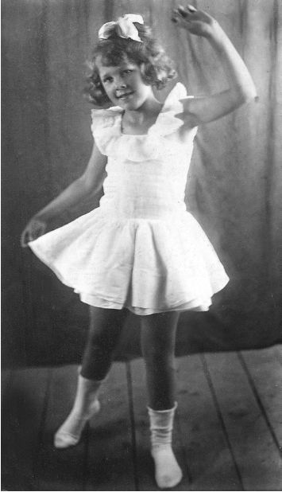
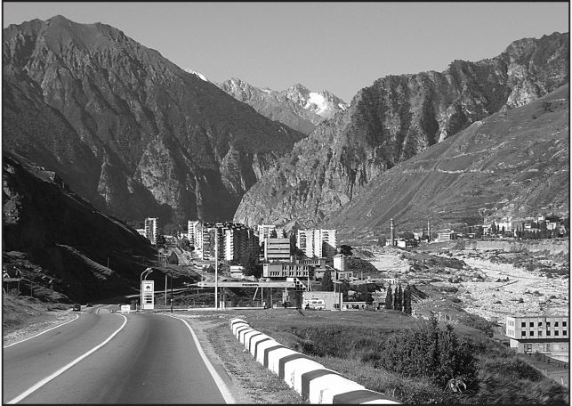
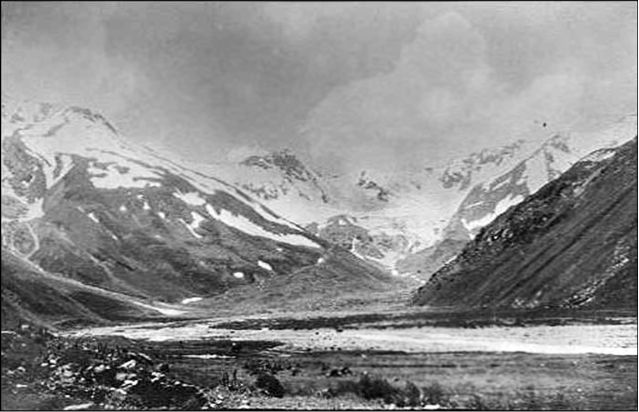

Страницы авторов "Тёмного леса"
Пишите нам! temnyjles@narod.ru
Посвящается светлой памяти
моей бабушки, Лилии Федоровны Яновской
(1930-2011).
В ближайшие дни, в октябре (впрочем, может быть и в ноябре) 2012 года исполняется ровно 70 лет с того времени как окончилась одна из самых необычных эвакуаций советских граждан из зоны, находившейся под угрозой гитлеровской оккупации. Это была эвакуация жителей высокогорного поселка Нижний Баксан на Северном Кавказе. Моя бабушка, Лилия Федоровна Яновская (в девичестве Ильвахина), будучи 11-летней девочкой, оказалась участницей этого, не побоюсь сказать, выдающегося события. Эвакуация эта, как ни странно, слабо затронута в специальных исторических исследованиях. Моя же цель в данном случае не столько, наверное, объективно осветить детали данного события, привлекая какие-то дополнительные материалы, а как раз напротив - представить воспоминания 11-летней девочки, пережившей эти события. Воспоминания, отражающие ее восприятие произошедшего, пускай и с определенными фактическими неточностями. Я оставил за собой право внесения только лишь отдельных небольших уточнений и пояснений по тексту, дабы читателю было понятно, о чем идет речь. Поскольку воспоминания Лилии Федоровны записаны с ее слов мной, повествование будет вестись от третьего лица.
* * *
Великая Отечественная война затронула каждую советскую семью, не оставив никого в стороне. И пускай она была не самой длинной войной в истории России, но то, что самой кровопролитной - сомнению не подлежит. Военные события 1941-1945 гг. сопровождались невиданными ранее по своим масштабам эвакуациями учебных заведений, предприятий, целых поселков и городов. И вот одна такая, во многом уникальная, эвакуация была осуществлена для спасения жителей высокогорного поселка Нижний Баксан в конце лета и осенью 1942 г.
В конце 1930-х гг. близ старого балкарского аула Герхожан (Кирхожан), возле вольфрамово-молибденовых месторождений, возник небольшой поселок, названный Нижним Баксаном. С 1955 г. и по настоящее время он известен как город Тырныауз. В нем поселились инженеры и рабочие, направленные правительством для добычи и обогащения руды. Сама шахта находилась на горе, на западной стороне ущелья. В самом же поселке располагалась обогатительная фабрика. Поселок был в первые годы своего существования очень чистым и благоустроенным. Не хватало только зелени в этой суровой горной местности. Нижний Баксан состоял из одноэтажных и двухэтажных домов, где располагались квартиры со всеми удобствами и электрическими печками (плитками). Были также в поселке дом культуры, десятилетняя школа, больница, поликлиника, почта, баня, магазины, детский сад, большая и благоустроенная столовая (кормили там вкусно и сытно - потому в поселке очень мало кто готовил и ел дома). При доме культуры функционировали хоровые, танцевальные, рисовальные и другие кружки, художественная самодеятельность, кинозал. Электроэнергией поселок снабжался от новой еще тогда БаксанГЭС. Отопление в зданиях обеспечивала поселковая котельная. Сейчас не только можно, но обязательно требуется сказать, что всю жилую инфраструктуру поселка своими руками построили заключенные (промышленные объекты им вроде бы не доверяли строить), потому как строительством поселка и функционированием горнодобывающего комплекса ведала система НКВД. Эта же система потом и была в числе основных организаторов эвакуации 1942 г.
Население в поселке в то время преобладало русское, но жили также кабардинцы и, конечно, местные горцы-балкарцы. Причем, некоторые из балкарцев остались жить в своих старинных домах, которые зачастую одиноко располагались в ущельях боковых притоков Баксана, неподалеку от поселка. Бабушке моей хорошо запомнилось одно из таких жилищ, прислоненное одной стороной к крутому склону горы. Там жила семья девочки, учившейся в одной школе с моей бабушкой. Те же балкарцы, которые к тому времени переселились в поселковые квартиры, долгое время еще не обзаводились мебелью, характерной для советского быта, а по старинке обходились минимумом ее.
Наступило лето 1941 года. Мой прадед, горный инженер Федор Тимофеевич Ильвахин (1904-1975), руководивший строительством угольных шахт (добыча велась горизонтальным способом) близ поселка Былым в этом же Баксанском ущелье, в конце июля привез сюда свою семью из Нальчика. В Нальчике его семья прожила несколько недель после того как покинула родной Донбасс. На мою бабушку оказали неизгладимое впечатление исполинские горы и бурная река Баксан, пропасти и многократно переброшенные через реку мосты. Все это было видено ей впервые. Доставив семью в безопасное (как ему казалось) место, мой прадед отбыл на Ленинградский фронт.
Так, моя прабабушка Кира Емельяновна с дочерьми: 11-летней Лилей, семилетней Лялей (Валерией) и четырехлетней Светой поселилась в одной из комнат типовой двухкомнатной квартиры в двухэтажном доме в два подъезда. Вторую комнату занимала еще одна небольшая семья - женщина с сыном.
Поначалу жизнь в Нижнем Баксане была спокойная и, наверное даже, чрезмерно комфортная для военного времени. Но советское государство окружало особой заботой предприятия, которые были в высшей степени важны для него. О войне по большей части напоминали только тревожные сообщения по радио. И еще, безусловно, у тех, кто проводил своих близких на фронт, было неспокойно на душе. Однако сам фронт пока еще был далеко от Кавказа. Все, что было построено в поселке перед самой войной, исправно функционировало. Лиля в сентябре пошла в школу. Ляля и Света - в детский сад. Голода в Нижнем Баксане тоже не ощущалось, так как снабжение продовольствием осуществлялось без сбоев.
Питались в столовой или получали там продукты домой. Кира Емельяновна считалась женщиной по тем временам образованной, так как окончила 10 классов, а если бы не война - то поступила бы в медицинский институт. Поэтому она легко получила должность бухгалтера в поселковой котельной.
Кира Емельяновна быстро включилась в среду местной интеллигенции (инженерно-технических работников, а сокращенно - ИТР), в которой было модно ходить друг к другу "на чай", а также посещать различные кружки и мероприятия в доме культуры. Кстати, среди инженерного персонала встречались и люди "из бывших". В хорошие теплые дни ходили собирать грибы и ягоды в окрестные рощи в район теснины Эль-Джурту. Там было много малины и других ягод. Ходили также к минеральным источникам. Кому хватало сил, поднимались еще выше - на горные луга. Моей бабушке на всю жизнь запомнились высокие травы и огромных размеров цветы на альпийских высокогорьях. Было и еще одно любимое место у жителей поселка - "елки". Так называлась небольшая сосновая рощица у берега бурной реки Баксан, в том месте, где потоком был образован довольно широкий песчаный пляж. Взрослые там любили загорать в теплые дни на нежном белом песке. А детвора с удовольствием плескалась в небольших и очень чистых лужицах. Только самые смелые жители поселка позволяли себе искупаться в бурных водах самого Баксана, но затея эта была очень опасной.
Этот мирок спокойствия надежно охранялся. Поэтому свободно выехать из Баксанского ущелья, а тем более въехать сюда было нельзя. Да никто и никуда практически не выезжал, кроме как по крайней необходимости. Кира Емельяновна один раз покинула ущелье вместе с дочерью Лилей - ездила на несколько дней в Пятигорск, чтобы проверить в лаборатории исправность барометров из котельной, в которой она работала. Моей бабушке Пятигорск того времени (еще до гитлеровской оккупации) запомнился живописным городом с красивыми зданиями-особняками, которые буквально тонули в окружении садов и цветников.
Но только первый год войны в Баксанском ущелье сохранялась спокойная жизнь. С 25 июля 1942 года началось стремительное наступление гитлеровцев на территорию Северного Кавказа. Люди слышали по радио тревожные вести о том, что оставлены Ростов, Сальск, Краснодар, Ставрополь. Угроза оккупации Баксанского ущелья день ото дня росла. Но надо заметить, что эта ситуация не застала врасплох органы НКВД, которые задолго до июля 1942 года стали готовиться к возможной эвакуации поселка. Жилищное и прочее строительство в Нижнем Баксане было остановлено. Заключенные вывезены куда-то. А когда моя бабушка в конце июня - начале июля отдыхала в лагере в верховьях Баксана вместе с другими детьми фронтовиков, то видела как группа альпинистов и помогавших им учащихся 10 класса поселковой школы ушли в горы прокладывать маршрут для эвакуации в Грузию. Для этих целей был выбран перевал Бечо, который при своей высоте в 3367 метров, был гораздо проще для преодоления, чем большинство других перевалов Главного Кавказского хребта, но в то же время не был столь открытым (а следовательно опасным из-за возможности налета вражеской авиации) как самый низкий и простой перевал Донгузорунбаши.
В поселке тогда тоже не смолкали разговоры о возможной эвакуации и все надеялись, что эвакуироваться не придется и угроза оккупации минует ущелье. Особенно беспокоились и боялись эвакуации молодые женщины с грудными или просто маленькими детьми, а также пожилые люди. Причины здесь понятны. Впрочем, нашлись у моей прабабушки Киры Емельяновны некоторые знакомые "из бывших", которые пытались убедить ее, что эвакуироваться вовсе не нужно, что коммунисты уйдут, придут немцы и начнется в Нижнем Баксане новая "прекрасная" жизнь. Но Кира Емельяновна и слышать ничего не хотела об этом. Ее супруг (Федор Тимофеевич) был членом партии с 1922 г. , а старший брат - Алексей Емельянович вступил в ряды большевиков еще задолго до 1917 г. и был лично знаком с В.И. Лениным. Кстати, нам до сих пор ничего не известно о судьбе тех, кто оставался в поселке, когда туда пришли гитлеровские оккупанты. У Киры Емельяновны была другая проблема, которая затрудняла возможность эвакуироваться. Не было рядом мужа. А эвакуироваться с тремя малолетними детьми не всякий решится.
В общем, уже в конце июля стало понятно, что эвакуация совершенно неизбежна - гитлеровцы подошли слишком близко, и медлить было уже нельзя. Пошли слухи о том, что будет взорвана БаксанГЭС, чтобы не оставлять ее врагу. Официально начало эвакуации объявили 7 августа. Из поселка выступила первая партия жителей не только Нижнего Баксана, но и поселка Былым, а также легкораненые бойцы Красной Армии из госпиталей Кавминвод. Транспорт, снабжение продовольствием, маршрут, инструктаж по технике безопасности - все было самым тщательным образом проработано и подготовлено. Инструктаж проводился заранее, а затем уже люди, забрав деньги, документы и теплую одежду, собирались в условленном месте, откуда грузовиками их увозили в аул Тегенекли, где начиналась пешеходная часть маршрута в виду отсутствия далее проезжей дороги.
С началом эвакуации Кирой Емельяновной буквально овладело отчаяние, так как она просто не представляла себе, как будет переходить ледяной перевал с дочерьми. Но отчаяние это длилось не долго. Уже 9 или 10 августа глубокой ночью с кучером на бричке в Нижний Баксан неожиданно приехал Федор Тимофеевич. В его жизни за время годичного отсутствия в Нижнем Баксане произошло очень многое. В ноябре 1941 года на Ленинградском фронте он был тяжело ранен, попав в окружение. Оказался задет позвоночник. После сложной операции в полевом госпитале, Федор Тимофеевич был направлен в крупный госпиталь в Свердловск, где лечился до марта 1942 года. Благодаря высочайшему профессионализму врачей, он снова смог ходить, правда, очень долгое время хромал. После первого отступления гитлеровцев из Донбасса, Федора Тимофеевича направили восстанавливать угольную шахту в Гуково Ростовской области, а после начала нового отступления Красной Армии из Донбасса - дали направление в Ташкент, разрешив заехать на Кавказ, чтобы забрать в Среднюю Азию семью.
Федор Тимофеевич предполагал вывезти семью на равнину в той же бричке, в которой приехал сам, чтобы затем по железной дороге ехать в Ташкент. Но это было уже слишком рискованно. Равнины и предгорья Кавказа стремительно занимали гитлеровцы. Кира Емельяновна настояла на том, чтобы вместе со всеми уходить через перевал. Федор Тимофеевич согласился, хотя осознавал, как непросто ему с хромотой после тяжелого ранения будет эвакуироваться таким путем. Где-то во второй половине августа Ильвахины, взяв с собой наиболее ценные вещи, немного продуктов и учебники для своей дочери Лили, покинули Нижний Баксан. Очень выручили семью в дороге деньги, которые откладывались на покупку пианино для Лили.
Сначала ехали в бричке. В сумерки прибыли в аул Тегенекли, где ночевали в одноэтажном побеленном здании школы. Переночевав, утром погрузили вещи на лошадей и, оставив бричку в ауле, двинулись пешком по ущелью реки Юсеньги в сторону лагеря "Северная палатка". Шли не одни, а в составе одной из последних групп эвакуировавшихся. Дорога шла высоко над речкой по безлесной местности (лес был только в начале пути). Засветло еще Ильвахины достигли альплагеря, который располагался на обширной ровной поляне и состоял из огромных армейских палаток. Всех сразу через перевал переводить было нельзя. За сутки до выхода в дальнейший путь составлялся список примерно из 30 человек. Этих людей накануне инструктировали, и проинструктированная группа под утро (еще затемно) в сопровождении альпинистов отправлялась на перевал. Таким образом, Ильвахины прожили несколько дней в "Северной Палатке". Кормили достаточно сытно. Выдавался сухой паек, а раз в день в большом котле варился суп с бараниной. Бабушка слышала, что большое поголовье баранов было перегнано через Главный Кавказский хребет по более легкому, но опасному ввиду возможности налета вражеской авиации перевалу (вероятно, Донгузорунскому) в Грузию, чтобы кормить участников эвакуации и дальше. В один из дней высоко в небе пролетел вражеский самолет, покружил над горами и улетел. Говорили, что гитлеровцы на одном из близлежащих перевалов выбросили десант, который был еще в воздухе расстрелян красноармейцами.
Наконец настал черед Ильвахиных переходить через перевал. Эвакуировавшиеся погрузили вещи на ослов, предоставленных балкарцами-проводниками. Ослы более подходили здесь в качестве вьючных животных. С лошадьми дальше идти было нельзя. Бабушке очень запомнилась жуткая картина гибели лошади, сорвавшейся с ледника в одном из наиболее опасных мест. В путь Ильвахины отправились около 3 часов ночи в сопровождении альпинистов. До ледника предстояло еще пройти по узкой и сложной тропе. И только днем группа достигла его. Идти было страшно. Иногда узкая тропа была буквально зажата между глубокими трещинами в ледяном покрове. Когда достигли опасного участка - ледникового выступа под названием "Куриная Грудка", группа разделилась. Одна часть эвакуировавшихся маленькими группами по 5 человек в сопровождении 2 альпинистов каждая отправились наверх по вырубленным во льду ступеням, держась за трос. Другая часть эвакуировавшихся обогнула "Куриную Грудку" и поднялась на перевал по крутому заснеженному склону. И таким образом все эвакуировавшиеся, целые и невредимые, достигли перевала, который представлял собой заснеженную перемычку между горами, с кое-где торчащими из подо льда скалами и камнями. На перевале все вещи были сгружены с ослов и балкарцы, получив за провоз ручной клади оплату (в основном расплачивались с ними одеждой, - те, конечно, кто взял ее с запасом), отправились с ледника обратно к "Северной Палатке".
На перевале люди поели. Воду пили прямо из ручейков, которых в солнечные теплые дни бывает много на леднике. Детям было разрешено есть снег. Затем стали определять, кто останется ночевать на перевале, а кто отправится сразу вниз для того, чтобы взять ослов для провоза маленьких детей и клади. Те, у кого были маленькие дети, наняли прямо здесь грузинских горцев сванов для переноски детей вниз. Сваны, обутые в "кошки" и с ледорубами в руках, удивительно проворно спускались по горным кручам и передвигались по ледникам, а детей несли в рюкзаках за спиной. В качестве оплаты за услуги сваны принимали деньги, золото, отрезы хорошей ткани.
Кира Емельяновна, Ляля и Света остались ночевать на перевале, а Федор Тимофеевич и Лиля отправились вниз вместе с более сильной частью группы. Сначала они просто сидя съезжали по скользкому фирну пологого косогора, притормаживая ногами. Опасность заключалась в том, что косогор заканчивался жутким высоким обрывом. Преодолев этот сложный участок, по узкому карнизу к 2 часам дня вышли на глинистую тропу. Эта пыльная дорога круто спускалась по склону, покрытому скудной травой и редким кустарником. Иногда на пути попадались "мочаки" - небольшие участки, на которых из земли повсюду сочилась вода. Поскольку Федор Тимофеевич не мог передвигаться быстро, то он вместе с Лилей очень отстал от остальных. И хотя планировалось добраться до лагеря "Южная Палатка" еще до темноты, уже стемнело, а они все спускались по склону гигантской горы, не встречая нигде признаков жилья. Наконец, из кромешной тьмы Федор Тимофеевич и Лиля вышли к костру, около которого сидел солдат, пасший лошадей. Солдат предложил им остаться до утра, объяснив, что по такой темноте до "Южной Палатки" лучше не идти, поскольку тропа местами проходит по краю высоких обрывов. Лилю укутали буркой, и она уснула, а Федор Тимофеевич до утра беседовал с солдатом. Ночь была тихая, но морозная, что особенно почувствовали оставшиеся на перевале.
Рано утром Федор Тимофеевич с Лилей довольно быстро добрался до лагеря, по пути убедившись, что солдат был прав, отговорив их идти ночью. Тропа часто выходила на край высоких обрывов. Лиля осталась в "Южной Палатке", а Федор Тимофеевич с несколькими другими мужчинами повел ослов на перевал, чтобы на них перевозить детей и ручную кладь. Примерно в то же время в сторону Бечо с целью проконтролировать процесс эвакуации вышли первый секретарь ЦК Коммунистической партии Грузинской ССР и народный комиссар обороны Грузинской ССР.
Через некоторое время оставшиеся ночевать на перевале, наконец смогли начать спуск к "Южной Палатке". У некоторых женщин обувь была совершенно не приспособлена для спуска по горным тропам и сильно скользила. Кто-то посоветовал привязывать к подошве куски бараньей шкуры, чтобы уменьшить скольжение. Кира Емельяновна последовала этому совету. Одно только было плохо - те, кто так сделал, поднимали за собой много пыли. Поэтому старались идти последними. Кира Емельяновна вообще пошла замыкающей. А когда эвакуировавшиеся встретились на тропе с представителями грузинской комиссии, то первый секретарь или народный комиссар (точно уже не известно) как-то остроумно пошутил в адрес Киры Емельяновны из-за того, что она поднимала много пыли. Та не менее остроумно ответила. И так словесный поединок продолжался почти до самого прибытия в лагерь. Следует также заметить, что грузинская комиссия, встретившись с группой эвакуировавшихся, любезно предоставила им своих лошадей, так что многие шедшие в группе дети часть пути смогли проехать верхом. Вечером все добрались до "Южной Палатки", где все было устроено практически точно так же как и на "Северной Палатке". Уже в сумерки мужчины привезли на ослах ручную кладь, так как женщины и дети шли к "Южной Палатке" налегке. Лагерь располагался на поляне, имевшей форму амфитеатра. Рядом находилась воинская часть. С северной стороны вздымался Главный Кавказский хребет с высокими обрывами и ледниками, а ниже лагеря протекала ледниковая речушка с чистейшей водой (вероятно, река Долра). Были последние дни августа. Погода стояла сухая и солнечная.
Пробыв в лагере около двух дней, участники эвакуации утром навьючили лошадей, предоставленных воинской частью, и отправились в путь к самому ближайшему населенному пункту - старинному сванскому селу. Бабушка не запомнила, а может и не знала его названия, но, по всей видимости, речь шла о селении Мазери. Дорога в село от лагеря была широкая и удобная - никаких крутых спусков. Вокруг были красивейшие горные пейзажи. Луговая растительность сменилась лесной. В одном месте видели снежный мост, "перекинутый" через реку - остатки сошедшей по весне или в начале лета лавины. После 10-12 километров пути, еще засветло вошли в селение.
Мало где в СССР можно было увидеть такую старину и самобытность как в высокогорном сванском селении. О том, что на дворе XX век, напоминала лишь только одноэтажная барачного типа школа (кстати, очень чистенькая и опрятная, выкрашенная и выбеленная к новому учебному году). Остальное, кажется, не изменилось с предыдущих нескольких столетий. Дома хаотично и без всякой скученности были разбросаны по пологому склону горы. Рядом с домами (и выше селения) виднелись каменные оборонительные башни, а за селом - живописные квадратики огородов и полей, разделенных канавками с водой. Местность здесь напоминала уже не узкое ущелье, а скорее долину (разумеется, не такую широкую, как Ферганская или Араратская). Типичный сванский дом - одноэтажная постройка с деревянной галереей, опоясывавшей дом со всех сторон. Примечательно, что дома стояли на высоких сваях, так что получался еще своеобразный "цокольный" этаж, где обычно держали животных: свиней, баранов, коров. У кого-то там жила домашняя птица (куры). На сваи дома ставили потому, что по весне с горных склонов обильно текла вода и могла бы в случае их отсутствия попасть в дом. Внутри и снаружи сванские жилища отличались большой чистотой и аккуратностью, были побелены. Полы были деревянными. Внутренняя обстановка включала в себя самодельную деревянную мебель. Полы были застелены домоткаными ковриками, на окнах были домотканые же занавески. Младенцы лежали в деревянных колыбельках в белоснежных пеленках. Костюм сванов также сохранял традиционные черты. У мужчин - белые подпоясанные рубахи навыпуск, темные штаны и кожаные сапоги. На голове - шапочки из войлока типа "кинтошек". У женщин - длинные темные юбки, светлые кофты, белые передники, а на голове - платок. Такая самобытность долго сохранялась благодаря большой изолированности сванов от внешнего мира. До 1936 г., когда сюда была построена дорога из города Зугдиди, сообщение сванов с внешним миром осуществлялось только через несколько высокогорных перевалов, проходимых только летом и в начале осени.
Участники эвакуации прожили в селении около недели. Ночевали в здании школы, где спали прямо на полу. Раз в день в большом котле готовился суп с бараниной. Дети развлекали себя тем, что носились к родовым башням, в которых сваны в старые времена укрывались от неприятеля. Сами сваны относились к эвакуировавшимся весьма дружелюбно. Желающие могли приобрести у местных домохозяек творог, молоко, масло, овечий сыр, сметану, яйца. Причем, сваны, не знавшие воровства, с большим доверием относились к покупателям и с легкостью давали им продукты в долг, показывая в какой дом перед отъездом нужно будет занести деньги.
После недели проживания в сванском селении, людей в грузовиках вывезли на равнину - в город Зугдиди. Дорога была узкая и очень опасная. Таких страшных пропастей моя бабушка не видела ни в Баксанском ущелье, ни в районе перевала Бечо. А ведь практически всем пришлось ехать в открытом кузове. Вечером, наконец, выехали на безлесную равнину, в Колхидскую низменность. Где-то перед городом грузовики были окружены местными жителями, которые стали предлагать пассажирам овощи поистине огромных размеров. Моя бабушка запомнила огурцы, едва ли не полуметровой длины.
Уже затемно прибыли в город Зугдиди. Этот небольшой старинный городок несколько веков назад был столицей мегрельских князей и назывался Дад. Эвакуировавшихся поселили в одноэтажном на высоких сваях здании школы с террасой и деревянным крыльцом. Находилась она на окраине города. Рядом протекала небольшая речка, куда бегали купаться дети. Взрослые ходили на шумный, в восточном духе, базар, где продавались овощи, овечий сыр, фрукты и многое другое. Очень много было винограда. Какую-то часть эвакуировавшихся (которые прибыли в Зугдиди в числе первых) поселили в другой школе, в центре города.
В начале сентября все участники эвакуации (в том числе и те, кто в числе первых перешел перевал Бечо) прибыли на вокзал, куда был подан пассажирский поезд для отправки людей в Баку. Перед посадкой в поезд, люди были тщательно проинструктированы, поскольку поезду предстояло ехать переполненным. Вагоны были купейные и плацкартные. В каждом купе разместилось по 8 человек, считая и детей. Т.е. на всех полках, включая третьи (для багажа) и на полу. Вместо проводников были назначены старшие по каждому вагону для контроля за соблюдением порядка и чистоты. Также старшие по вагону следили за тем, чтобы в туалете всегда была вода. Питание выдавалось сухим пайком, но в вагоне-ресторане готовились горячие блюда. Кипяток брали на станциях. Путь предстоял не длинный по расстоянию, но очень долгий. После проверки наличия всех эвакуировавшихся по составленным спискам, поезд отправился в Баку по широким просторам Колхидской низменности. Состав двигался очень медленно, подолгу стоял на полустанках, где набиралась вода, закупалось продовольствие. Поезд, таким образом, шел вне графика, подобно военному эшелону. Самая большая (двухдневная) остановка была в Тбилиси. Но в город никого не выпускали, поскольку он был на военном положении. Здесь два товарных вагона были наполнены продовольствием для дальнейшего следования. За городом состав прошел по мосту над мутными коричневатыми водами спокойной реки - Куры. Потом были долины, засаженные садами, виноградниками и пирамидальными тополями.
В Баку прибыли ночью, причем состав был подан прямо в порт. Около 10 часов утра началась выгрузка людей, которая продлилась до 4 часов пополудни. Порт представлял собой территорию, отгороженную от города высоким забором. День был очень теплым, поэтому многие не смогли отказать себе в том, чтобы искупаться в молочно-бирюзовых водах Каспийского моря. Кто не умел плавать - сидели на деревянных мостках, уходящих в морское, пахнущее нефтью пространство. Хотя в город выходить не рекомендовалось, некоторые все-таки ходили туда. Ночевали участники эвакуации прямо под открытым небом, расстелив на земле одеяла.
В 5 часов утра была подана огромная грузовая баржа для следования к пристани Красноводска. Часть людей разместилась в трюме, а другая часть - на палубе под открытым небом. Ильвахины были в числе тех, кто оказался на палубе. Плыли долго. К вечеру волнение в море усилилось и тем, кто был в трюме - пришлось несладко. Многих укачивало, и было очень душно. На палубе были свои "приключения" - стали захлестывать волны. Но все же там было несравненно лучше, свежее. Ночью над палубой буквально зажглось тысячами огоньков звездное небо. Только в 4 часа пополудни второго дня пути баржа подошла к пристани Красноводска. Города видно не было. Вокруг простиралась голая выжженная степь, виднелись несколько каких-то зданий, да тупиковая железнодорожная ветка. Пассажиры баржи сошли на берег и около полуночи к пристани был подан железнодорожный состав. Он был уже не пассажирским, а товарным ("телячий вагон"). Но в вагонах были сделаны полки-нары в два яруса для пассажиров.
Этот состав шел не быстрее, чем закавказский. Также делалось много остановок на полустанках, чтобы набирать воду из цистерн. Сухой паек и крупы пассажирам выдавались. Ежедневно делались остановки в выжженной степи и люди торопились разжечь костры и приготовить себе горячую пищу. Города же проезжали ночью. Так что бабушке моей из всего этого участка пути запомнились только среднеазиатские пески с барханами, да верблюды, которых она видела из поезда.
Где-то около 20 сентября поезд прибыл в Ташкент. Для Ильвахиных долгая дорога практически закончилась, хотя как сказать, конечно. Довелось им поездить и по Средней Азии. У Федора Тимофеевича было сюда направление и он, оставив семью в сквере у ташкентского вокзала, отправился в какое-то учреждение. Бабушка после войны никогда не встречала людей, которые эвакуировались вместе с ними. Но она знала, что те проехали поездом до самого Красноярска, а затем пароходами были отправлены на север - в Норильск. Там многие стали работать на разработках никеля и никелевом комбинате. Так, во всяком случае, рассказал Федору Тимофеевичу в 1944 г. в Москве один человек, принявший участие в этой памятной эвакуации, которая спасла жизнь приблизительно полутора тысячам человек.
Для Ильвахиных путешествие в 1942 г. оказалось более коротким. В тот же день прибытия в Ташкент Федор Тимофеевич получил направление в город Ош в Ферганской долине. И сразу же отправился с Кирой Емельяновной и дочерьми в этот маленький и при этом очень колоритный восточный город. В Оше бабушке запомнились узкие извилистые улочки, дома с глухими стенами без окон (но зато с отверстием в потолке для того чтобы проникал свет и уходил дым очага), многочисленные каналы-арыки, узбекские женщины, носившие паранджу и скрывавшие лицо плотной непроницаемой для глаз прохожих сеткой из черного конского волоса, узбекские мужчины в белых рубахах, коротких белых штанах и тюбетейках. Запомнился ей и восточный базар, где можно было увидеть тогда еще мужчин, вероятно таджиков, в чалмах и полосатых халатах, с крашеными хной бородами и ладонями (кстати, женщины в тогдашнем Оше, в свою очередь, красили брови басмой, делая рисунок утонченным). А какие изумительные фрукты были там: крупные и сладчайшие персики, инжир, виноград, уже не говоря о яблоках, грушах и пр. Эти произрастания земли спасли от голода многих в военное время.
В Оше Ильвахины прожили около недели, а затем уехали в голодный, окруженный пустынными горами поселок угольщиков Таш-Кумыр в ущелье реки Нарын (Федор Тимофеевич работал там в шахтоуправлении). Последним местом жительства Ильвахиных в Средней Азии был горняцкий поселок Шураб, что находился недалеко от таджикского города Исфара. Уже оттуда в 1944 г. семья вернулась на родину - в Донбасс, где поселилась в Краснодоне.
Нельзя сказать, что события этой эвакуации забыты. Кое-какие сведения о ней можно почерпнуть из старых газетных статей, путеводителей по Кабардино-Балкарии. Но самые ценные сведения, несомненно, могут быть получены только из воспоминаний людей, которые тогда, в 1942-м, своими ногами прошли через Бечо - этот подлинный перевал спасения для стольких жителей обреченного на вражеское нашествие Баксанского ущелья. Только очевидцев с каждым годом все меньше.
  
Лиля Ильвахина. Нижний Баксан. 1941 г. Город Тырныауз (бывший поселок Нижний Баксан). Фото автора. Перевал Бечо.
Эта статья (с дополнениями) на форуме старинной архитектуры Кавказских Минеральных Вод
Вячеслав Яновский. Неакадемические сочинения